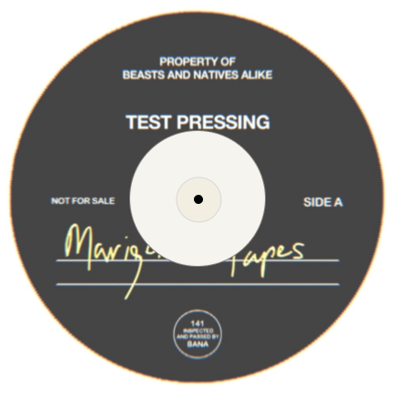
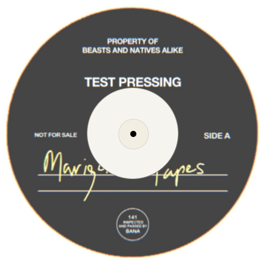

야 내가 많이 변했냐
살다보니까 다 변하더란 말들
믿을 놈 없는 곳이라 조심하라는 말들
난 널 뭐를 보고 믿지
의리 따지던 친구들도 길이 나눠지지
절대 순진하지 말라네
많은 요구사항 동시에 몇 가지 듣지
못미더운 그 놈의 말과
오래된 친구의 절대 알 수 없는 속
어쩌면 이 생각에 시간 쓴 내가 제일 더러워
다들 경쟁 비교하며 따져드는 우위
아름다운 일 아니라고 뉴스는 떠들지만
금방 바뀌는 일이 아닌 걸 다 봤어 우린
옆에 일 아닌듯 지내는 기술을 배우지
슬퍼만하면 애지
내가 버릇이 되어 있는
착한 내 친구의 삶까지는 내가 못챙겨
서로 이해해
신나기만 하던 주정뱅이가 변하긴 했네
Life goes on
차라리 그때가 나았지
그건 아무짝에 쓸모없는 대사
니가 보낸 십대의 삶이
또 괴로웠던 군대가 지금 되려 그립다니
빨리 뛰쳐나가고 싶어했던 건 너잖니
7 to 10
책상에 앉아 있을 땐 지나가기만 바랬지
이게 꼭 그때의 얘기만은 아닌 듯 하네 너한텐
마시고 죽지는 말자
보면 다 왔다 갔다 해
자신의 모자람인가 불공평인가
시간 길게 두고 생각해볼만 하지만
그걸 허락해주지 않네
다 work work
노른자위로 일단 가보게
엉덩이 털고 일어나지
반나절 넘게 걸려 도착할
그 곳을 그려보며 괴로운 비행도 참아
날씨도 좋았으면 좋겠네
춥지도 덥지도 않고 딱 적당하게
아무데나 앉아 담배 한대 피워
몸에 해로워 나도 알지 물론
중독인데 아닌 척
사실은 그냥 멍때릴 시간 좀 버는거지
조용한 5분을 줘
두가지 생각이 동시에 위로
피로를 느끼며 이 고민은 또 내일로
Knockin' on heaven's door
잠시 그저 조용히 누울 침대를 줘
E SENS - 비행
 
